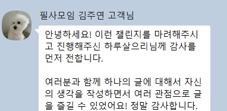
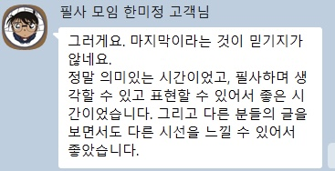

하고 싶은 게 없는 게 아닙니다.
아무도 물어봐 주지 않았을 뿐입니다.
매일 아침 도착하는 질문 하나에 답하는 20일.
“나도 나를 모르겠는” 사람에서 → 나를 한 문장으로 설명하는 사람으로.
지금은 아무것도 결제하지 않습니다 · 정원 3명 · 연락처만 남기면 됩니다
1기 소식 가장 먼저 받기 →검사는 당신을 분류했지,
설명해주지 않았습니다.
MBTI도 알고, 적성검사도 해봤고, 강점 진단까지 받아봤습니다.
결과지에 적힌 말은 다 맞는 것 같은데, 그게 나랑 무슨 상관인지는 모르겠습니다.
자기소개서 첫 칸에서 커서만 깜빡입니다.
쓸 말이 없어서가 아닙니다. 어떤 나를 써야 할지 모르는 겁니다.
하루 날 잡고 나를 들여다보자니 어디서부터 봐야 할지 모르겠습니다.
그러다 유튜브를 켭니다. 또 하루가 갑니다.
당신이 게으른 게 아닙니다.
구조의 문제입니다.
사람은 질문을 받기 전까지 자기 생각을 꺼내지 못합니다.
검사지는 보기 중에서 고르게 할 뿐, 당신에게 묻지 않습니다.
필요한 건 더 많은 정보가 아니라, 제대로 된 질문 스무 개입니다.
20일 동안,
매일 하나씩 묻습니다.
매일 아침, 질문 하나가 도착합니다
무슨 질문이 올지는 미리 알려드리지 않습니다. 미리 준비한 답은 남에게 보여주려고 만든 답이니까요.
답은 그날 안에 씁니다. 세 줄이어도 됩니다. 하루 10~20분이면 충분합니다.
쓴 글은 나만 보고, 인증만 함께합니다
답은 각자 개인 페이지에 씁니다. 다른 사람에게 보이지 않습니다.
단톡방에는 “오늘 썼습니다” 한 줄만 남깁니다. 공개할지 말지는 매일 당신이 고릅니다.
매주 한 번, 당신의 글을 읽고 편지를 씁니다
잘 썼다는 말은 하지 않습니다. 무엇을 반복해서 쓰고 있는지, 어디서 말을 아꼈는지를 적습니다.
정원이 세 명인 이유입니다. 늘어나면 이걸 못 합니다.
20일 뒤, 당신은 자기 이야기를
골라 쓸 수 있는 사람이 됩니다.
끝나면 파일 하나가 남습니다.
당신을 읽어낸 책입니다.
20일 중 16일 이상 쓰신 분께 한 세트로 만들어 보내드립니다.
내가 쓴 글 20편
맞춤법과 문장만 다듬어 한 권으로 묶습니다. 내용은 손대지 않습니다. 읽기 편하게만 만듭니다.
받은 편지 4통
매주 받은 편지를 그대로 함께 묶습니다. 내 글과, 그 글을 읽은 사람의 말이 나란히 남습니다.
나 사용설명서
20일치를 전부 다시 읽고 제가 쓰는 글입니다.
- 반복해서 나온 단어 다섯 개
- 길게 쓴 날과 짧게 쓴 날
- 매번 비껴간 이야기
- 본인은 별거 아니라고 넘긴 것 중, 강점이라 부를 만한 것
- 다음 3개월에 해볼 것 하나
1기는 PDF로 보내드립니다. 종이책 제작은 2기부터입니다.
3개월 전까지,
저도 위에 적은 사람이었습니다.

하고 싶은 게 없는 줄 알았습니다. 아니었습니다.
스무 살 겨울에 있었던 걸 잊고 있었을 뿐이었습니다.
그걸 알아낸 방법이 글이었습니다.
300권을 읽고 128편을 쓰는 동안 알게 된 건 하나입니다.
나에 대한 답은 생각해서 나오는 게 아니라,
쓰다가 튀어나옵니다.
자격증은 없습니다. 대신 이 길을 3개월 전에 지나왔습니다.
그래서 어디가 막히는 자리인지 압니다.
고쳐 쓰지 않았습니다.
받은 그대로입니다.
이전에 운영한 필사모임 참가자들이 남긴 후기입니다.
“손글씨 쓰는 걸 좋아하지만, 어떤 걸 써야할지 잘 모르겠고, 또 혼자서는 꾸준히 끌고 나가는 힘이 없어서 금방 작심삼일로 끝나는 걸 알기에 더욱 시작하지 않았던 게 필사입니다. (…) 매일 주어진 문장을 쓰다보니 자연스럽게 ‘그에 대한 나의 생각은 어떠한가’를 스스로에게 물을 수 있었고, 머릿속에 둥둥 떠다니는 정리안된 감정들을 글로써 종이에 옮겨 담으며 굉장히 차분해지는 시간이었습니다.”


“필사를 할 수 있는 기회라서 좋았고 함께해서 더 좋았어요. 예전에도 스스로 했지만 매일 한다는 것은 생각보다 어려우니까요~ 이런 환경에 던져진 상황이 되니 책임감이 생기고, 또 서로의 생각을 글로 나눈다는 점도 좋았어요.”
“매일 아침 영감을 주는 명언을 선별하고 나누어 주신 수고에 다시 한번 감사드립니다. 덕분에 ‘보는 눈’과 ‘생각하는 힘’이 한 뼘 더 자랐습니다!”
모두 실제로 받은 후기입니다. 문장을 고치지 않았습니다.
1기는 아직 열지 않았습니다.
정원이 세 명이라 아무 때나 열지 못합니다.
연락처를 남겨주시면 1기가 열릴 때 가장 먼저 알려드립니다.
- 모집 시작을 가장 먼저 안내받습니다. 정원이 셋이라, 알림이 곧 자리입니다.
- “요즘 답답한 것”을 한 줄 남기시면, 스무 개 질문을 만들 때 실제로 반영합니다.
- 지금은 아무것도 결제하지 않습니다. 연락처만 남기면 끝입니다.
1기가 열리면 남겨주신 곳으로 가장 먼저 연락드리겠습니다.
궁금한 것들
글을 잘 못 쓰는데 괜찮을까요?
괜찮습니다. 잘 쓰는 게 목적이 아니라 알아내는 게 목적입니다. 세 줄만 써도 됩니다. 맞춤법은 마지막에 제가 고칩니다.
하루 얼마나 걸리나요?
10분에서 20분 사이입니다. 오래 붙잡고 있으면 오히려 답이 꾸며집니다.
빠지면 어떻게 되나요?
빠져도 됩니다. 다만 지난 질문은 다시 열어드리지 않습니다. 밀린 걸 따라잡아야 한다는 부담이 생기면 대부분 그만두게 되기 때문입니다. 20일 중 16일이면 완주입니다.
쓴 글이 다른 사람에게 보이나요?
기본은 비공개입니다. 각자 개인 페이지에 쓰고, 단톡방에는 썼다는 사실만 남깁니다. 공개하고 싶은 날만 공개하시면 됩니다.
정원이 왜 세 명인가요?
매주 한 명 한 명의 글을 전부 읽고 편지를 쓰기 때문입니다. 인원이 늘면 그게 안 됩니다.
질문이 뭔지 미리 알 수 있나요?
알려드리지 않습니다. 미리 생각해둔 답은 대개 남에게 보여주려고 만든 답입니다.